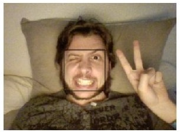

MiniFaceDetection
April 2018 - May 2019
Mini Real Time Face Detection in 278b of HTML+JS, golfed with p01 (Chrome only)
<canvas id=a><video id=v><svg onload="navigator.getUserMedia({video:1},n=m=>{v.src=top.URL.createObjectURL(m);setInterval(async(c=a.getContext`2d`)=>{c.drawImage(v,0,0,208,150);for(i of await new FaceDetector().detect(a))with(i.boundingBox) c.strokeRect(x,y,width,height)},9)},n)">
- Github
- Demo